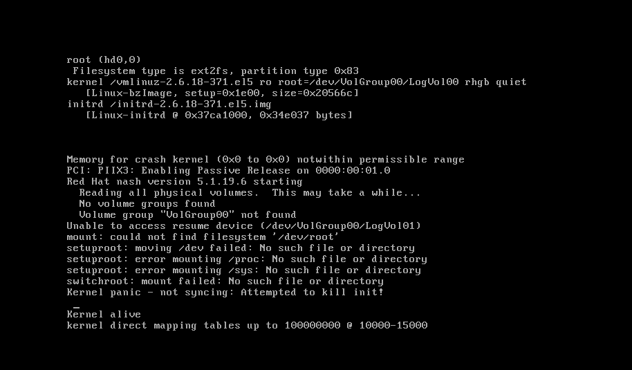

A continuación se detalla la experiencia obtenida al virtualizar un servidor CentOS 5.7 que utiliza LVM. La vm correspondiente a dicho servidor será creada en un servidor de vm's con CentOS 6.4 utilizando libvirt y virt-manager.
Dump del disco físico
Para comenzar la virtualización copiamos el contenido del disco al servidor de vm's.
En el servidor de vm's (al que se desea enviar la imagen) se ejecuta para recibir la imagen de disco:
(mintaka) # nc -l 12345 | bzip2 -d | dd of=/var/lib/libvirt/images/alnitak-disk1.img bs=16M
Se bootea el servidor que se desea virtualizar con una imagen live y se ejecuta para enviar la imagen de disco:
(alnitak-live) # dd if=/dev/sda bs=16M | bzip2 -c | nc 10.11.12.13 12345
Limpiar bloques no utilizados del disco
Al realizar una copia física del disco es probable que se haya leído basura en
los sectores no utilizados por el filesystem.
Luego, si se intenta convertir el disco a un formato que soporte la creación de
imagenes dispersas (sparse images), la información basura evitará que pueda
compactarse correctamente la nueva imagen de disco durante su conversión.
Una técnica para evitar lo anterior es crear en el filesystem un archivo que
ocupe todo el tamaño disponible y cuyo contenido sea una repetición del valor nulo, \0.
Luego de que se obtenga un error, ya que no queda espacio en el dispositivo, se
borra el archivo.
Crear vm para escribir disco
Para realizar lo anterior se debe crear una vm utilizando la imagen de disco. Para ello utilizamos la interfaz gráfica virt-manager.
Como detalle relevante de la configuración:
NOTA: En el último paso de la creación de la vm elegir la opción Customize configuration before install.
-
Se elige como versión del OS CentOS 6.0, ya que la 5.7 no está disponible
-
Se utiliza como configuración de red Host device: eth0: macvtap y como Source mode el valor Bridge para conectarnos remotamente.
-
Se cambia la dirección MAC del dispositivo NIC.
Esto es necesario para que al iniciar la vm no sea sobreescrito el archivo
/etc/sysconfig/network-scripts/ifcfg-eth0con la configuración de red actual.Para obtener la dirección MAC utilizamos el comando
ipen la imagen live:(alnitak-live) # ip link show 1: lo: <LOOPBACK,UP,LOWER_UP> mtu 65536 qdisc noqueue state UNKNOWN mode DEFAULT group default qlen 1 link/loopback 00:00:00:00:00:00 brd 00:00:00:00:00:00 2: enp2s0: <BROADCAST,MULTICAST,UP,LOWER_UP> mtu 1500 qdisc pfifo_fast state UP mode DEFAULT group default qlen 1000 link/ether 01:23:45:67:89:ab brd ff:ff:ff:ff:ff:ffLa diferencia en los nombres de interfaz es debido a que en versiones recientes de linux se utilizan nombres consistentes para interfaces de red.
-
Se debe cambiar el valor de Disk bus que por defecto es VirtIO, ya que utilizando este obtenemos el siguiente error al iniciar la vm:

Esto es debido a que en la wiki de libvirt sobre virtio se indica que para utilizar VirtIO hay que tener un kernel >= 2.6.25, y el CentOS 5.7 a virtualizar tiene instalada la versión del kernel 2.6.18.
En el caso de utilizar para Disk bus el valor SATA se obtiene el siguiente error en virt-manager (versión 0.10.2):
Error starting domain: unsupported configuration: SATA is not supported with this QEMU binaryNOTA: eliminar el controlador SATA si se obtuvo el mensaje de error previo.
Debido a los problemas anteriores encontrados terminamos utilizando IDE como valor para Disk bus.
NOTA: según el sitio de kvm, usar IDE como storage interface es lento. En caso de ser posible es recomendable cambiar el SO a uno que pueda utilizar VirtIO (menor riesgo) o actualizar el servidor de virtualización para que pueda utilizarse SATA en las vm's.
Actualización del kernel
Limpieza de disco
Una vez que se inició la vm pasamos a escribir todo el espacio libre del disco
con el carácter \0.
Aquí hay que tener en cuenta que hay varias particiones y se está utilizando LVM, por lo que debe crearse un archivo lleno de nulos que ocupe todo el filesystem para cada filesystem y para los volúmenes libres.
Primero vemos que particiones existen utilizando parted
(alnitak-vm) # parted /dev/hda print
Model: QEMU HARDDISK (ide)
Disk /dev/hda: 160GB
Sector size (logical/physical): 512B/512B
Partition Table: msdos
Number Start End Size Type File system Flags
1 32.3kB 107MB 107MB primary ext3 boot
2 107MB 160GB 160GB primary lvm
Information: Don't forget to update /etc/fstab, if necessary.
Luego para la invormación relativa a LVM utilizamos los comandos pvs,
vgs y lvs:
(alnitak-vm) # pvs
PV VG Fmt Attr PSize PFree
/dev/hda2 VolGroup00 lvm2 a- 148.94G 0
(alnitak-vm) # vgs
VG #PV #LV #SN Attr VSize VFree
VolGroup00 1 2 0 wz--n- 148.94G 0
(alnitak-vm) # lvs
LV VG Attr LSize Origin Snap% Move Log Copy% Convert
LogVol00 VolGroup00 -wi-ao 143.16G
LogVol01 VolGroup00 -wi-ao 5.78G
Verificamos si ya están montadas las particiones en el sistema (en caso contrario necesitaremos montarlas) o están en uso como swap:
(alnitak-vm) # mount | grep -P '/dev/hda1|VolGroup'
/dev/mapper/VolGroup00-LogVol00 on / type ext3 (rw)
/dev/hda1 on /boot type ext3 (rw)
(alnitak-vm) # swapon -s | grep 'VolGroup'
/dev/mapper/VolGroup00-LogVol01 partition 6062072 0 -1
De lo anterior se deduce que:
- El disco está siendo totalmente utilizado por las particiónes
bootylvm - La partición
lvmconsta de un solo volume group,VolGroup00y este está dividido en doslogical volumes:LogVol00yLogVol01que utilizan todo el espacio del volumen. - La partición
boot(/dev/hda1) está montada en/boot. - El volumen lógico
LogVol00está montado en/ - El volumen lógico
LogVol01está funcionando como partición swap (activa).
Para limpiar las particiones anteriores se utiliza:
NOTA: conviene ejecutar los siguientes comandos dentro de un script,
y en caso de realizarlos mediante ssh utilizando screen.
En caso contrario utilizar la consola desde
virt-manager ya que puede llevar un buen rato que el comando se complete.
(alnitak-vm) # dd if=/dev/zero of=/EMPTY bs=16M
(alnitak-vm) # rm /EMPTY
(alnitak-vm) # dd if=/dev/zero of=/boot/EMPTY bs=16M
(alnitak-vm) # rm /boot/EMPTY
(alnitak-vm) # swapoff /dev/mapper/VolGroup00-LogVol01
(alnitak-vm) # dd if=/dev/zero of=/dev/mapper/VolGroup00-LogVol01 bs=16M
(alnitak-vm) # mkswap /dev/mapper/VolGroup00-LogVol01
(alnitak-vm) # sync
Luego apagamos y eliminamos la vm, ya que no tenemos más necesidad de utilizarla, teniendo cuidado de NO ELIMINAR LA IMAGEN DE DISCO.
Convertir disco para uso con virtualizador
Una vez que se haya limpiado la imagen del servidor que queremos virtualizar generamos una imagen dispersa (sparse image):
(mintaka) # qemu-img convert -f raw -O qcow2 \
/var/lib/libvirt/images/alnitak-disk1.img \
/var/lib/libvirt/images/alnitak-disk1.qcow2
Al comando anterior se le puede agregar el flag -p para tener un indicador de
progreso ya que la conversión puede ser una operación lenta.
Notas
Elección del formato de imagen a utilizar
Se eligió el formato qcow2 siguiendo la sugerencia en la documentación de
openstack sobre
imagenes:
If your deployment uses QEMU or KVM, we recommend using the images in qcow2
format
Entre las ventajas del formato qcow2 se destacan:
- la capacidad de realizar snapshots
- la capacidad de usar sparse files (se consume solo el espacio utilizado, no el espacio físico reservado para la imagen)
TODO's
-
buscar una comparativa entre distintos formatos de imagen a utilizar; una búsqueda rápida en internet no dió resultado satisfactorio.
-
En varios sitios se menciona la fragilidad de qcow2, detallar.